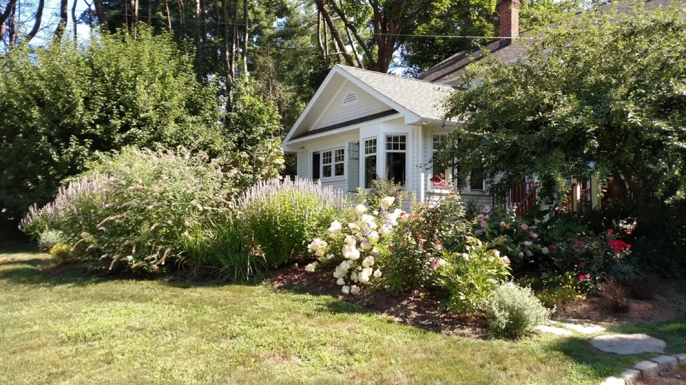

En bref
- En 2025, 43,6 % des Bruxellois qui ont acheté un bien l'ont fait hors de Bruxelles, contre 39,9 % en 2024 (notaire.be, 29 octobre 2026).
- Pour les maisons, seuls 32 % des acheteurs bruxellois restent à Bruxelles (43 % choisissent la Flandre, 25 % la Wallonie) ; pour les appartements, 86 % restent.
- Une maison coûtait en moyenne environ 583 000 € à Bruxelles en 2025, contre environ 380 000 € en Flandre et 270 000 € en Wallonie.
- Un crédit-pont couvre l'écart entre achat et vente, mais ses conditions peuvent être plus strictes et plus chères qu'un crédit classique.
- Diamant Consult vend votre bien à Bruxelles pour 2 % HTVA, tout compris, avec un premier rendez-vous gratuit et sans engagement.
Combien de Bruxellois achètent leur prochain logement hors de Bruxelles ?
En 2025, 43,6 % des Bruxellois qui ont acheté un bien l'ont fait en dehors des 19 communes, selon la Fédération du notariat publiée le 29 octobre 2026 sur notaire.be. La part était de 39,9 % en 2024, 42,5 % en 2023 et 44,7 % en 2021. Ce mouvement concerne surtout les maisons : seuls 32 % des Bruxellois qui achètent une maison restent à Bruxelles, contre 43 % qui choisissent la Flandre et 25 % la Wallonie. Pour les appartements, 86 % restent dans la capitale.
Si vous êtes propriétaire à Bruxelles et que vous rêvez de plus d'espace ou de verdure, vous n'êtes donc pas un cas isolé. Chez les couples bruxellois qui achètent une maison, 45 % ont choisi la Flandre en 2025. Les 31 à 35 ans sont les plus nombreux à franchir la frontière régionale : 26 % des Bruxellois qui ont acheté une maison hors de Bruxelles ont cet âge.
Pourquoi vendre à Bruxelles pour acheter ailleurs ?
La première raison est le prix : d'après notaire.be, une maison coûtait en moyenne environ 583 000 € à Bruxelles en 2025, contre environ 380 000 € en Flandre et 270 000 € en Wallonie. Les notaires citent aussi le besoin d'espace pour une famille qui s'agrandit, l'envie de verdure et, en Wallonie, les droits d'enregistrement réduits pour les primo-accédants introduits en 2025.
Pour un propriétaire bruxellois, l'équation est simple à poser : le prix de vente de votre bien finance en grande partie la suite. Pour connaître la tendance du marché bruxellois avant de décider, lisez notre analyse du marché immobilier à Bruxelles en 2026.
Faut-il vendre d'abord ou acheter d'abord ?
Il n'y a pas de réponse unique, mais l'ordre se décide selon trois critères : votre capacité d'emprunt, l'état du marché pour votre bien et le délai que vous pouvez supporter. Voici les deux scénarios les plus courants.
- Vendre d'abord : vous connaissez votre budget exact avant de vous engager, mais vous devrez peut-être loger ailleurs entre la vente et l'achat.
- Acheter d'abord : vous évitez le déménagement provisoire, mais vous portez deux biens en même temps, avec le risque de payer deux crédits si la vente tarde.
Le délai de vente compte beaucoup dans ce choix : consultez combien de temps faut-il pour vendre à Bruxelles.
Comment financer l'écart entre l'achat et la vente ?
La banque peut vous accorder un crédit-pont, qui couvre la période entre l'achat du nouveau bien et la vente de l'ancien. D'après notaire.be, la banque avance le montant de la vente de votre bien actuel, vous le remboursez avec le prix de vente et vous payez des intérêts entre-temps. Ses conditions peuvent être plus strictes et plus chères qu'un crédit classique, et il s'ajoute à votre crédit existant.
Autre piste citée par le notariat : conserver votre crédit actuel et reporter l'inscription hypothécaire sur le nouveau bien, ce qui peut éviter des pénalités de remboursement anticipé et de nouveaux frais de dossier. Demandez ces options à votre banque avant de signer un compromis d'achat.
Peut-on vendre sous condition d'acheter un autre bien ?
Oui, le compromis de vente peut contenir une condition suspensive. Selon notaire.be, le compromis lie le vendeur et l'acheteur et peut être assorti de conditions suspensives ou résolutoires. Une condition suspensive liée à l'obtention d'un crédit protège l'acheteur ; un vendeur peut, de son côté, prévoir de pouvoir d'abord acheter un autre bien. Ce type de clause se rédige avec votre notaire : en pratique, plus elle est large, moins votre bien séduit les acheteurs, car elle retarde la certitude de la vente.
Quel budget prévoir pour la vente ?
Chez Diamant Consult, la commission est de 2 % HTVA, tout compris : photos, annonces, visites et suivi jusqu'à l'acte chez le notaire Stephan Borremans. Sur une maison vendue 500 000 €, cela représente 10 000 € HTVA. Pour comparer avec les commissions habituelles, lisez combien coûte une agence immobilière à Bruxelles. Toutes les étapes de la vente sont détaillées dans notre guide pour vendre sa maison à Bruxelles.
Et si vous voulez acheter en Brabant wallon ?
Parmi les Bruxellois qui achètent une maison hors de la capitale, 33 % choisissent le Brabant flamand et 12 % le Brabant wallon (notaire.be). Diamant Consult couvre Bruxelles et le Brabant wallon : voir vendre sa maison en Brabant wallon.
Comment préparer votre vente ?
Diamant Consult vous reçoit pour un premier rendez-vous gratuit et sans engagement, à Schaerbeek (avenue du Diamant 138) : vous y fixez avec nous le prix de mise en vente, en tenant compte de la date à laquelle vous devez acheter ailleurs. Écrivez-nous par e-mail pour convenir d'un moment.
Vendre dans votre commune
Prix médians Statbel, quartiers et accompagnement à 2 % HTVA : retrouvez la page de votre commune.
- Schaerbeek
- Anderlecht
- Auderghem
- Berchem-Sainte-Agathe
- Bruxelles-Ville
- Etterbeek
- Evere
- Forest
- Ganshoren
- Ixelles
- Jette
- Koekelberg
- Molenbeek-Saint-Jean
- Saint-Gilles
- Saint-Josse-ten-Noode
- Uccle
- Watermael-Boitsfort
- Woluwe-Saint-Lambert
- Woluwe-Saint-Pierre
- Waterloo
- La Hulpe
- Wavre
- Rixensart
À lire aussi
Questions fréquentes
Faut-il vendre avant d'acheter à Bruxelles ou ailleurs ?
Cela dépend de votre capacité d'emprunt et du délai que vous pouvez supporter. Vendre d'abord donne un budget certain, acheter d'abord évite un déménagement provisoire mais fait porter deux biens à la fois.
Qu'est-ce qu'un crédit-pont ?
Selon notaire.be, c'est un crédit qui couvre la période entre l'achat d'un nouveau bien et la vente de l'ancien : la banque avance le montant de la vente et vous la remboursez avec le prix de vente, en payant des intérêts entre-temps.
Peut-on mettre une condition d'achat dans le compromis de vente ?
Le compromis peut contenir des conditions suspensives. Un vendeur peut prévoir de pouvoir d'abord acheter un autre bien, mais une telle clause se rédige avec le notaire et peut rendre le bien moins attractif.
Pourquoi tant de Bruxellois achètent-ils hors de Bruxelles ?
Selon les notaires, le prix est le facteur principal (environ 583 000 € pour une maison à Bruxelles contre environ 380 000 € en Flandre), avec le besoin d'espace, la verdure et, en Wallonie, des droits d'enregistrement réduits pour les primo-accédants.
Combien coûte la vente avec Diamant Consult ?
La commission est de 2 % HTVA, tout compris, et le premier rendez-vous est gratuit et sans engagement.
Sources
- notaire.be · Acheter à Bruxelles, en Flandre ou en Wallonie : que choisissent les Bruxellois ? (29/10/2026)
- notaire.be · Mon compromis de vente signé, dois-je encore contacter ma banque ?
Vous envisagez de vendre ? Diamant Consult vend votre maison ou appartement partout à Bruxelles à 2% HTVA, tout compris : premier rendez-vous gratuit, photos, Immoweb, visites et suivi jusqu'à l'acte. Prendre rendez-vous →